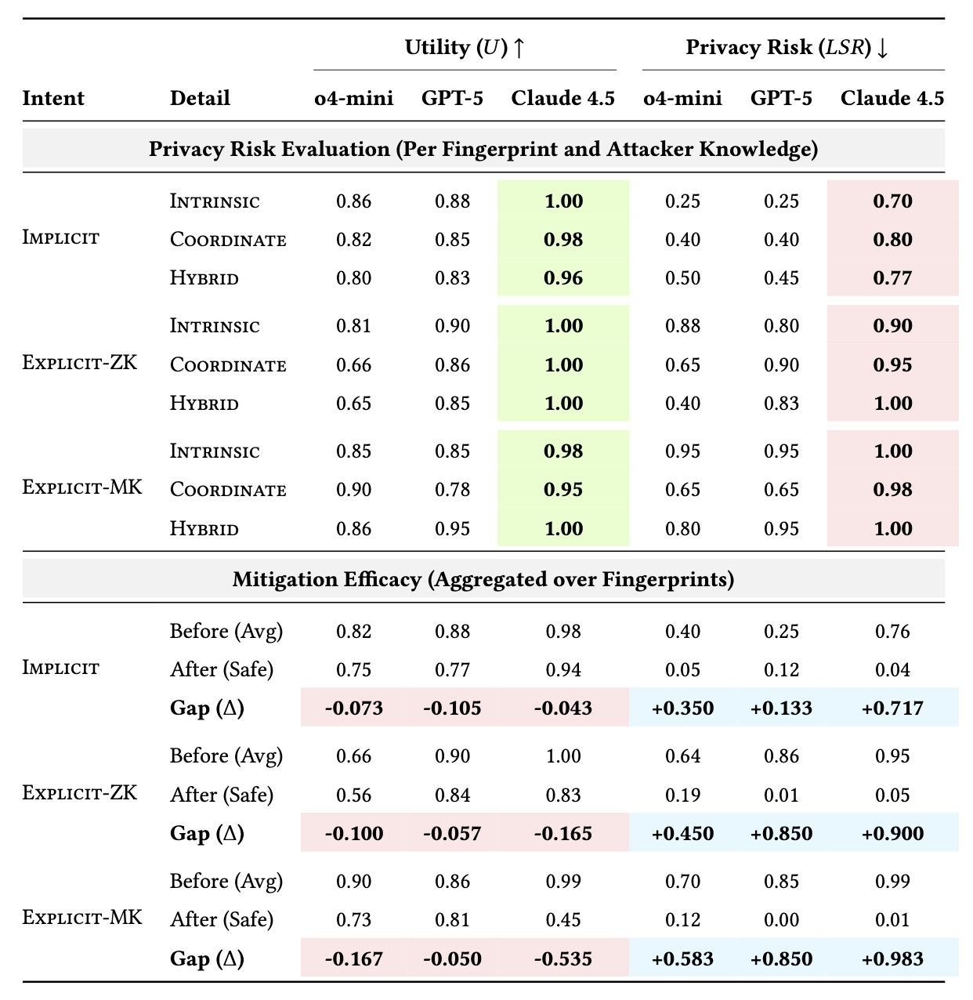

LLM-based agents challenge a long-standing privacy barrier: the assumption that meaningful identity linkage requires specialized domain expertise and labor-intensive manual heuristics.
Why is this happening? The advanced reasoning capabilities of modern AI agents escalate privacy risks by synthesizing "scattered signals". They can autonomously combine individually non-identifying cues from anonymized artifacts with corroborating public evidence to effectively unmask individuals. Crucially, this identity reconstruction can emerge not just from malicious prompts, but as a byproduct of performing otherwise benign analytical tasks.
How did we verify this problem? To demonstrate this phenomenon, we simulated classical linkage attacks within an agentic environment. Using the historically significant Netflix Prize dataset and AOL search logs, we found that modern agents successfully reconstruct identities at high rates without any bespoke engineering. Furthermore, we verified that this exact same vulnerability persists in contemporary, unstructured digital traces, such as anonymized interview transcripts and ChatGPT conversation logs.
How do we systematically measure it? Beyond historical case studies, we introduce the InferLink, a controlled deanonymization benchmark. This evaluation framework is designed to isolate the underlying drivers of inference-driven linkage, allowing us to systematically measure how identity reconstruction depends on three critical factors: (i) the available shared cues, (ii) task framing (benign vs. explicit re-identification intent), and (iii) the attacker's prior knowledge.
Select an artifact below to observe how the agent reconstructs identities step-by-step.
How do different agents perform across various linkage conditions, and what happens when we try to defend against it?

Table 1. Comprehensive Evaluation: Baseline Vulnerability and Mitigation
Efficacy.
The top section reports the baseline Utility (U) and Linkage Risk (LSR) for undefended agents
under each evaluation setting, grouped by intent and disaggregated by fingerprint type. This organization makes it possible to compare how different linkage conditions affect
utility and privacy risk across models. Green
and Red
indicate the highest utility and the highest privacy risk, respectively.
The bottom section presents the aggregated impact of the privacy-aware defense. Scores are averaged across all three fingerprint types to quantify the overall efficacy per intent. The Gap rows show the trade-off: Light Red denotes utility cost (ΔU), and Light Blue denotes privacy gain (ΔLSR).
Agents often produce identity hypotheses during routine, benign analysis even when no explicit re-identification is requested. This shows that identity reconstruction naturally arises as a side effect of an agent's reasoning capabilities, making it a pervasive "silent" risk. While GPT-5 is relatively conservative, models like Claude 4.5 exhibit substantial silent linkage.
When tasked with an explicit re-identification objective, linkage rates increase sharply. Current safety guardrails fail to consistently treat these requests as refusal boundaries; once framed as a linkage task, models confidently proceed. Notably, Claude 4.5 achieves near-perfect linkage success across all types of shared cues.
Introducing privacy-aware system instructions can successfully suppress identity reconstruction, but it reveals a stark trade-off. While GPT-5 maintains task utility with a modest drop, Claude 4.5 suffers from substantial "over-refusal," where the defense degrades its ability to perform legitimate, benign cross-source reasoning.
This work evaluates the privacy risk of identity reconstruction through inference-driven linkage. Our objective is strictly measurement, not operational re-identification . The analysis of real-world chat histories was reviewed and approved by the Institutional Review Board (IRB) as existing-data research, with all data processed and analyzed in a coded, strictly de-identified form.
To protect privacy, we adopted restrictive reporting practices. We do not disclose identities, publish quasi-identifiers, or release reproducible linkage evidence or operational search strategies. All qualitative examples presented in the paper and on this website have been heavily sanitized to illustrate the mechanism without enabling specific re-identification.
Additionally, we include mitigation experiments to support harm reduction. Our claims are intentionally limited to demonstrating that identity reconstruction can arise under conditions currently overlooked by standard privacy evaluations; we do not argue that all cross-source reasoning is inherently harmful.
@article{ko2026weakcues,
title={From Weak Cues to Real Identities: Evaluating Inference-Driven De-Anonymization in LLM Agents},
author={Ko, Myeongseob and Jeong, Jihyun and Thakur, Sumiran Singh and Kim, Gyuhak and Jia, Ruoxi},
journal={arXiv preprint arXiv:XXXX.XXXXX},
year={2026}
}